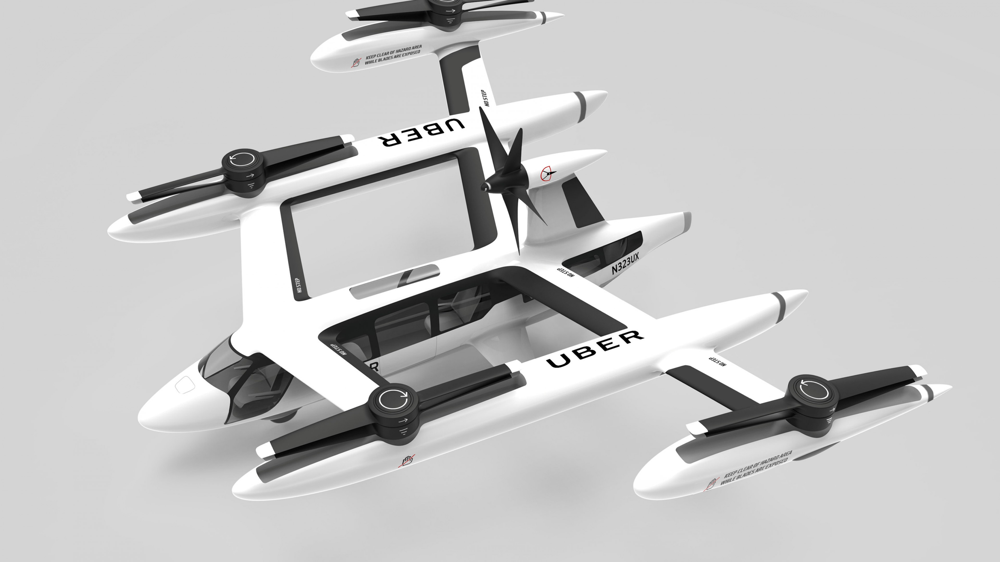

Impact of technologies in our daily life
Over the years, technology has revolutionized our world and daily lives. Technology has created amazing tools and resources, putting useful information at our fingertips.
Modern technology has paved the way for multi-functional devices like the smartwatch and the smartphone. Computers are increasingly faster, more portable, and higher-powered than ever before. With all of these revolutions, technology has also made our lives easier, faster, better, and more fun.

Over the last 2 to 3 decades, technology has become more and more a part of our daily lives, to the point where it has taken over our lives. Do you notice how our lives are surrounded by gadgets and tech appliances. The PC at your desk, the cell phone next to your bed, the Wifi router, even your thermostat – all these are examples of how technology has transformed every aspect of our lives; some for the good and others may not be so good.
Advantages of technology
The powerful use of Technology in Education has modified the face of education and it has created more instructional possibilities. Both instructors and college students have benefited from numerous educational technology, teachers have learned how to integrate technology in their school rooms and students are becoming more interested by learning with generation.
Disadvantages of technology
With the use of social media just like facebook, messenger, snapchat and other various apps, the students waste more time on them, that’s why most of the young generation has become lazy. Most of the students are wasting time by watching movies rather than playing in parks this thing also traumatizes the young people.
Nowadays, it has become addiction most of the people relying on internet such as if some one wants to purchase some things like clothes , mobiles cars and even vegetables by ordering through the online stores. For example, amazon,daraz.pk,etc. it also creates letharginess.